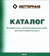

Содержание
ЧАСТЬ I. ПИ-ТРУБЫ И ПИ-ФАСОННЫЕ ИЗДЕЛИЯ ПРОИЗВОДСТВА ООО «БЕЛТЕРМИЗ»
1. Гарантийные обязательства.
2. Основные характеристики изделий и область их применения.
3. Транспортировка, погрузка, разгрузка и складирования ПИ-труб, ПИ-фасонных изделий и полиэтиленовых и термоусаживаемых муфт.
4. Принципы формирования условных обозначений ПИ-труб и ПИ-фасонных изделий при оформлении заказа
Раздел 1. Трубы стальные предварительно термоизолированные пенополиуретаном (пи-трубы)
Раздел 2. Отводы предварительно термоизолированные пенополиуретаном (пи-отводы)
Раздел 3. Тройники прямые предварительно термоизолированные пенополиуретаном (пи-тройники прямые)
Раздел 4. Тройники воздушника предварительно термоизолированные пенополиуретаном (пи-тройники воздушника)
Раздел 5. Тройнкик с угловым ответвлением 45° предварительно термоизолированные пенополиуретаном (пи-тройники угловые)
Раздел 6. Тройники с параллельным отводом предварительно термоизолированные пенополиуретаном (пи-тройники параллельные)
Раздел 7. Переходы предварительно термоизолированные пенополиуретаном (пи-переходы)
Раздел 8. Опоры неподвижные прямые предварительно термоизолированные пенополиуретаном (пи-опоры неподвижные прямые)
Раздел 9. Промежуточные элементы предварительно термоизолированные пенополиуретаном (пи-промежуточные элементы)
Раздел 10. Концевые элементы предварительно термоизолированные пенополиуретаном (пи-концевые элементы)
Раздел 11. Краны шаровые предварительно термоизолированные пенополиуретаном (пи-краны шаровые)
Раздел 12. Краны шаровые с воздушным предварительно термоизолированные пенополиуретаном (пи-краны шаровые с воздушниками)
ЧАСТЬ II. КОМПЛЕКТУЮЩИЕ ПРОИЗВОДСТВА ООО «БЕЛТЕРМИЗ»
Раздел 1. Муфта термоусажибаемая полиэтиленовая
Раздел 2. Держатель проводов
Раздел 3. Пробка воздушника
Раздел 4. Мат компенсационный
Раздел 5. Металлическая заглушка изоляции (МЗИ)
Раздел 6. Опора скользящая направляющая
Раздел 7. Опора проходная
ЧАСТЬ III. НОРМЫ РАСХОДОВ МАТЕРИАЛОВ
Раздел 1. Норма расходов материалов при монтаже систем предварительно термоизолированные пенополиуретаном трубопроводов для типоразмеров 25/90 – 820/1000
Раздел 2. Норма расходов материалов, применяемых при удалении соединительных кабелей NYM 3X1,5 и NYM 5X1,5
УСЛОВНЫЕ ОБОЗНАЧЕНИЯ
ИСПОЛЬЗУЕМЫЕ ТЕХНИЧЕСКИЕ НОРМАТИВНЫЕ ПРАВОВЫЕ АКТЫ
БИБЛИОГРАФИЯ
Скачать каталог в pdf формате
